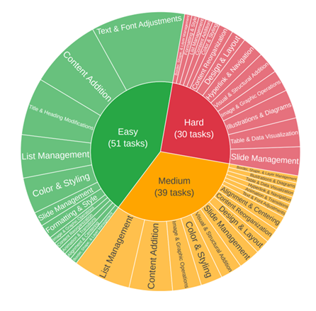

PPT-Eval contains 120 tasks across 12 source files spanning difficulty bands (Easy: 51 / Medium: 39 / Hard: 30) and intents such as content addition, styling, layout restructuring, diagram augmentation, object management and multi-element coordination.